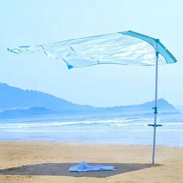

Teardown 03
风启自动撑开沙滩伞

用户
去海边、沙滩度假游玩的人群；想要快速搭建遮阳伞，讨厌手动费力撑开、组装繁琐的传统沙滩伞
场景
沙滩户外场景，抵达沙滩后，快速架设遮阳伞用来防晒
当前方案痛点
普通沙滩伞需要人工费力撑开、固定骨架；海边操作麻烦；大风环境下普通伞容易翻折、吹翻，组装步骤多
创意方案
伞面结构做特殊框架设计，利用自然风力作为动力源；风吹入伞面内部即可自动把伞撑开，不需要手动推骨架；结构同时优化抗风能力
核心价值
省去人工撑开的操作，降低搭建的体力与操作成本；适配海边有风环境，简化户外装备架设流程-----省力、方便
方案短板与边界
完全无风环境下无法自动撑开，需要两根绳子拉开；只能在有风场景发挥优势；对风力大小有要求，风力过大依然有损坏风险；结构框架体积更大，收纳袋比普通沙滩伞笨重
底层设计思想
借用环境中现成的自然能量，替代人工操作来完成产品的状态切换
同思想延伸案例
- 太阳能路灯：利用环境光能供电，替代人工布线外接电源
- 风力发电路灯：利用环境风能供电，替代外接电力设施
AI 机会迁移
AI产品不依靠用户手动触发全部操作；当环境/输入数据满足特定条件时，自动触发对应的处理流程，减少用户手动点击、操作的步骤